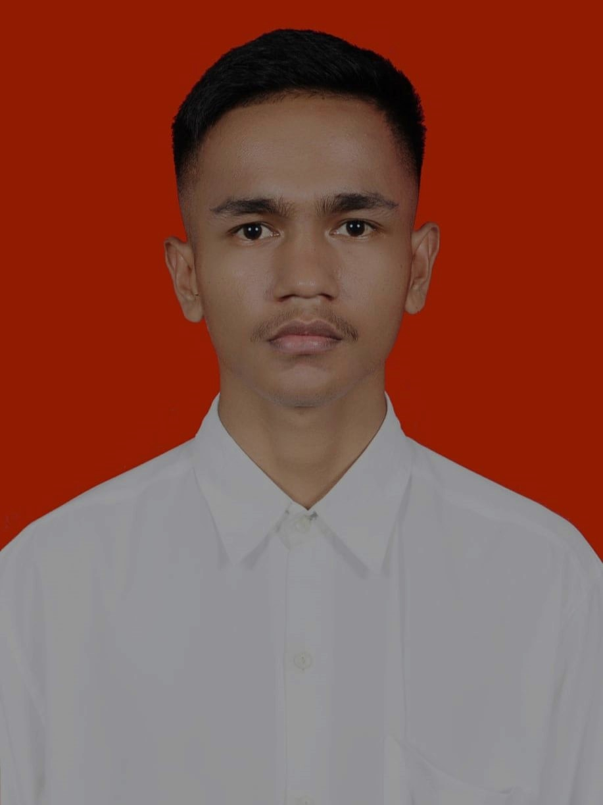

Dalam era digital saat ini, keberadaan web tidak hanya sebagai media informasi, tetapi juga sebagai ekspresi dari identitas pribadi.
Memenuhi tuntutan dari perkembangan teknologi dan pendidikan, tugas desain web menjadi penting untuk memberikan wawasan tentang kreativitas,
keahlian teknis, dan kemampuan komunikasi. Dalam konteks ini, saya
mempresentasikan proyek desain web pribadi sebagai bagian dari tugas matakuliah Desain Web, yang mencerminkan identitas saya dalam beberapa aspek.
Halaman beranda website ini adalah cerminan dari artikel ini. Di sini, saya mengeksplorasi pengalaman, minat, dan visi saya melalui kata-kata.
Dari pendidikan awal di TK Matoa Kaimana hingga perjalanan pendidikan di SMP YAPIS Kaimana dan SMA Negeri 2 Kaimana, saya menyoroti bagaimana
pengalaman-pengalaman itu membentuk identitas dan minat saya. Artikel ini bukan hanya sekadar penjelasan tentang latar belakang saya,
tetapi juga refleksi tentang bagaimana pengalaman hidup saya membentuk pandangan dan minat saya terhadap teknologi, seni, dan literatur.
Halaman profil adalah tempat bagi pengunjung untuk mengenal saya secara lebih dekat. Di sini, saya menyajikan biodata lengkap saya, termasuk riwayat pendidikan, pengalaman kerja (jika ada), minat dan hobi, serta informasi kontak yang relevan. Ini adalah gambaran singkat tentang siapa saya di luar artikel beranda. Dari latar belakang pendidikan hingga minat pribadi, profil saya bertujuan untuk memberikan gambaran menyeluruh tentang siapa saya sebagai individu.
Di halaman ini, saya memperkenalkan diri melalui media audio dan video. Audio kesukaan saya menjadi jendela ke dalam selera musik dan preferensi saya dalam hal audio. Sementara itu, video perkenalan diri saya memberikan kesempatan untuk saya berbicara langsung kepada pengunjung website, memberikan pengantar tentang siapa saya, apa yang saya lakukan, dan apa yang saya harapkan dari interaksi dengan pengunjung.
Terakhir, halaman "Tentang" menyajikan informasi tambahan tentang saya, seperti minat khusus, cita-cita,
atau pengalaman yang ingin saya bagikan. Di sini, saya juga mungkin memberikan visi saya tentang masa depan, baik itu dalam hal karir,
pendidikan lanjutan, atau kontribusi terhadap masyarakat.
Halaman ini adalah penutup yang sempurna untuk perjalanan singkat melalui identitas digital saya.
Dalam keseluruhan proyek desain web ini, saya berharap dapat memberikan gambaran yang jelas dan menarik tentang siapa saya sebagai individu.
Dari artikel beranda yang reflektif hingga informasi detail dalam profil, serta audio dan video yang memberikan dimensi baru dalam memahami saya,
semuanya dirancang untuk merangkul identitas digital saya secara menyeluruh. Melalui proyek ini, saya belajar tidak hanya tentang teknis desain web,
tetapi juga tentang bagaimana mengartikulasikan identitas pribadi secara kreatif dan efektif dalam ruang digital yang terus berkembang.
Profil |
||
|  | Nama | : Daeng Rizki Maulana Rumles |
| Nim | : 16323048 | |
| Kelas | : 1B | |
| Perguruan Tinggi | : Politeknik Negeri Fakfak | |
| Jurusan | : Manajemen Informatika | |
| Alamat | : Jln. Fakfak Sanggram, Kampung Air Besar | |
| Asal sekolah | : SMA NEGERI 2 KAIMANA | |
| Asal daerah | : Maluku | |
| Minat dan hobi | : Futsal | |
| Agama | : Islam | |
| Tahun Masuk | : 2023 | |
| : Maulanakareth45@gmail.com | ||
| No handphone | : 082199---- | |
| Social media | : @rsky_maulna | |
Perkenalkan nama saya Daeng Rizki Maulana Rumles, saya adalah mahasiswa aktif program studi D3 Manajemen Informatika Politeknik Negeri Fakfak, saya berasal dari Kabupaten Kaimana, Papua Barat.
Saya memilki minat yang kuat terhadap teknologi informasi, serta berharap dapat memanfaatkan ilmu yang saya dapatkan untuk meningkatkan kualitas hidup masyarakat. Saya juga sangat berminat dengan berbagai kegiatan ekstrakulikuler dan organisasi yang dapat membantu saya meingkatkan kemampuan dan keterampilan saya.
Saya adalah individu yang dibesarkan di Kaimana, Papua Barat, sebuah daerah yang kaya akan keindahan alam dan keanekaragaman budaya. Awal pendidikan saya dimulai di TK Matoa Kaimana, diikuti dengan pendidikan dasar di SD Matoa/YAPIS Kaimana, dan melanjutkan pendidikan menengah pertama di SMP YAPIS Kaimana. Setiap tahap pendidikan memberikan landasan yang kuat bagi perkembangan pribadi dan akademis saya.
Saya melanjutkan pendidikan menengah atas di Sekolah Menengah Atas Negeri 2 Kaimana, di mana saya tidak hanya mendapatkan pengetahuan dalam bidang akademis, tetapi juga mengembangkan keterampilan sosial dan kepemimpinan melalui berbagai kegiatan ekstrakurikuler dan proyek sekolah.
Pada usia 20 tahun, saya telah menemukan minat saya dalam beberapa bidang, termasuk teknologi, seni, dan literatur. Khususnya, minat saya pada teknologi telah mendorong saya untuk memilih program studi Manajemen Informatika sebagai fokus studi saya di Politeknik Negeri Fakfak. Saya percaya bahwa teknologi memiliki potensi besar untuk menciptakan perubahan positif dalam masyarakat, dan saya bersemangat untuk belajar dan berkontribusi dalam bidang ini.
Kebanyakan dari waktu saya dihabiskan untuk belajar, mengeksplorasi minat saya, dan berinteraksi dengan teman-teman serta keluarga. Saya percaya dalam pentingnya menjaga keseimbangan antara kehidupan pribadi, pendidikan, dan karir untuk mencapai kesuksesan yang berkelanjutan dan memuaskan dalam hidup.
Dengan latar belakang dan pengalaman yang saya miliki, saya berharap dapat terus memberikan kontribusi positif bagi masyarakat dan mencapai impian dan tujuan hidup saya dengan tekad dan dedikasi yang tinggi.
©2024 Risky Maulana